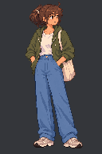
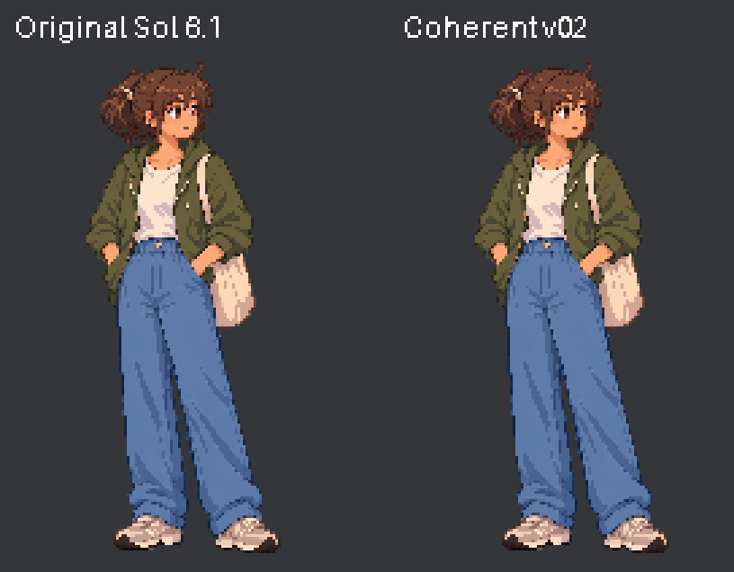

Original Sol is left; new candidate is right. Both retain the authored 3380ms cycle. Head, neck, shoulders and upper sleeves use one connected breathing pose. Wrists, pockets and feet stay fixed. A connected shirt crease responds 180ms after the rise; tied hair follows the skull and the tote body stays still.


Open the GIF itself at 100% for exact 3× scaling on narrow screens. The one-pixel rise remains discrete; judge whether the longer connected hold feels alive or too stiff. No artistic approval is inferred from the checks.
Editable Aseprite master · Candidate 3× GIF · Contact sheet with durations · Diagnosis, evidence and limits